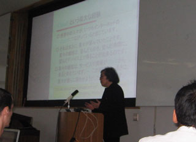
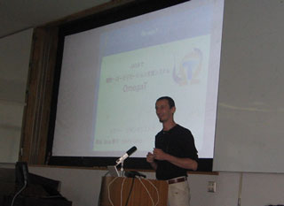
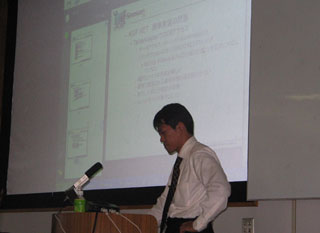

2007/10/5
岡山Java祭り
2007年10月5日に行われた「岡山Java祭り」についてのまとめです。
当日は54名の方にご参加いただきました。
?開催概要
2007年10月5日(金) 14:30 - 17:30
岡山大学自然科学研究科大講義室
開催目的
岡山在住のJava技術者を含めた種々エンジニアの交流を促進すると共に、今後Javaを習得しようとする技術者、または興味をお持ちの方を対象とし、より一層個々の能力の向上と地域発信のイノベーションを活性化させるために開催するものである。
主催
岡山Javaユーザ会
後援
岡山県工業技術センター
支援団体等
日本Javaユーザー会
岡山大学工学部通信ネットワーク工学科 船曳研究室
ネットシティーズ
ラコム株式会社
?タイムテーブル
| 時刻 | 内容 |
|---|---|
| 14:00～ | 受付開始 |
| 14:30～ | 開催の挨拶 |
| 14:40～15:30 | 基調講演：Googleの分散処理技術 |
| 丸山不二夫 氏 日本JAVAユーザーグループ会長、稚内北星学園大学 学長 | |
| 15:30～15:40 | 休憩 |
| 15:40～16:30 | Session1：Javaで翻訳・ロカーリゼーション支援システム：OmegaT |
| NetBeansのロカーリゼーションプロジェクトの中で生まれ変わったOmegaTは何をするソフトなのでしょうか？JavaソフトであるOmegaTの現状と課題点、また、翻訳・ローカリゼーション業界での概念を明らかにします。 | |
| Jean-Christophe Helary 氏 （元）OmegaT Project | |
| 16:30～16:40 | 休憩 |
| 16:40～17:30 | Session2：レバレッジ指向アーキテクチャ 「多言語・マルチパラダイム時代のシステム構築」 |
| Java、.NET、Lightweight Language等の多言語をオブジェクト指向、アスペクト指向、関数プログ ラミング等多様化するプログラミングパラダイムを混在させる事が可能となってきた今、Javaの 使いどころとjava+.NET+αを組み合わせる事でレバレッジを利かすアーキテクチャの例を紹介します。 | |
| 太田 渉 氏 The Seasar Project Commiter |
?当日の様子
丸山先生

エラリーさん

太田さん

?講演資料など
- 太田さん
- プレゼン資料：レバレッジ指向アーキテクチャ(PDF)(3382)
- デモムービー（SWFファイルになっていますので、FlashPlayerが必要です）
Copyright(C)2009 岡山Javaユーザ会 All rights reserved.